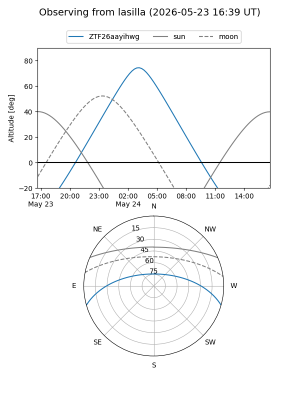
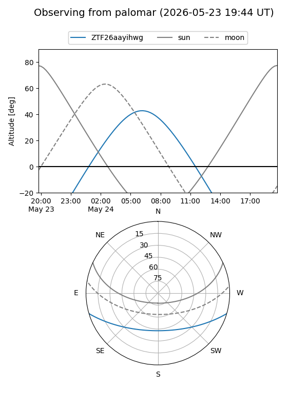

ZTF26aayihwg
Target ZTF26aayihwg at 2026-05-24 07:22
Aliases and brokers:
lsst-FINK: link
lsst-Lasair: link
lsst-ALeRCE: link
ztf-FINK: link
ztf-Lasair: link
ztf-ALeRCE: link
alt names
ZTF26aayihwg (ztf,fink_ztf)
Coordinates:
equatorial (ra, dec) = 216.9244,-13.66524
equatorial (HMS+DMS) = 14:27:41.87,-13:39:54.86
galactic (l, b) = (335.7321,+42.99265)
Flags:
Photometry:
last ztfg=18.41
1 ztfg detections
Lightcurve
Visibility


Additional plots